LIVE 19.0s — hold 1 (рендер 1 повний, контейнер компактний)
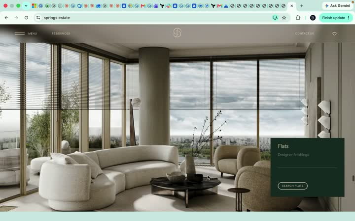
ЛІВОРУЧ live springs.estate (Screen Recording 2026-07-16 17.21.20, сегмент 19–38s) · ПРАВОРУЧ наш build.html через window.render(p). Порядок бітів і закон межі — предмет звірки; фасад dummy за задумом.

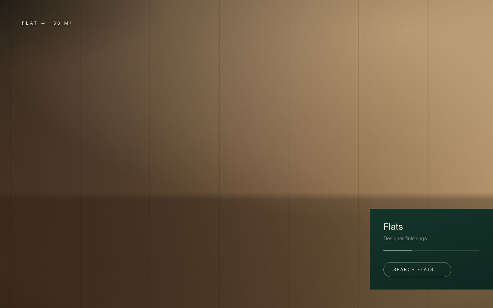
✅ Збіг: рендер full-bleed; info-контейнер справа-внизу впритул до правого краю; заголовок типу + підпис + кнопка; тонкий прогрес усередині.
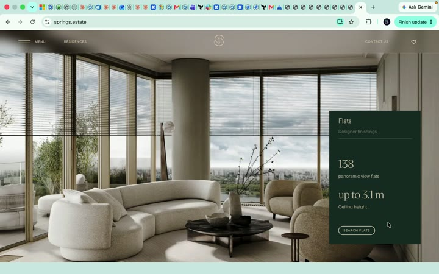
✅ Збіг механіки hover: розкриття вгору зі статистикою (наші дані: 138 / up to 3.1 m — ті самі значення у g1). Числовий гейт: hover 0→206px, leave→0, картка в межах в'юпорта.
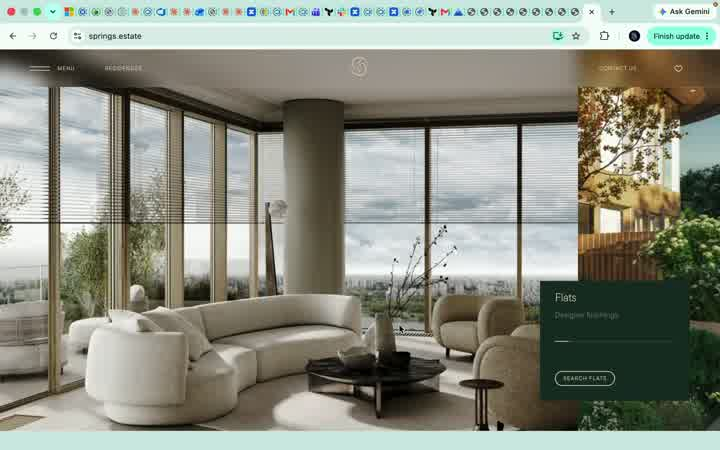
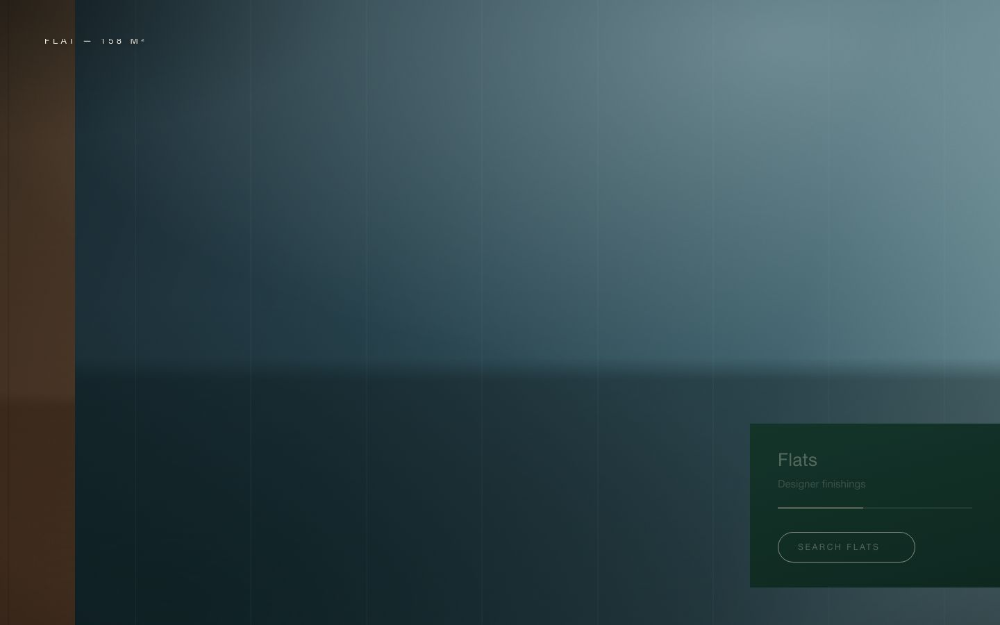
✅ Збіг закону-сигнатури: нова сцена заходить з правого краю, межа їде вліво, старий рендер лишається під нею (cover, не slide). Контейнер видимий БЕЗПЕРЕРВНО (M4).
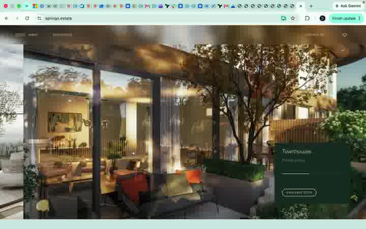
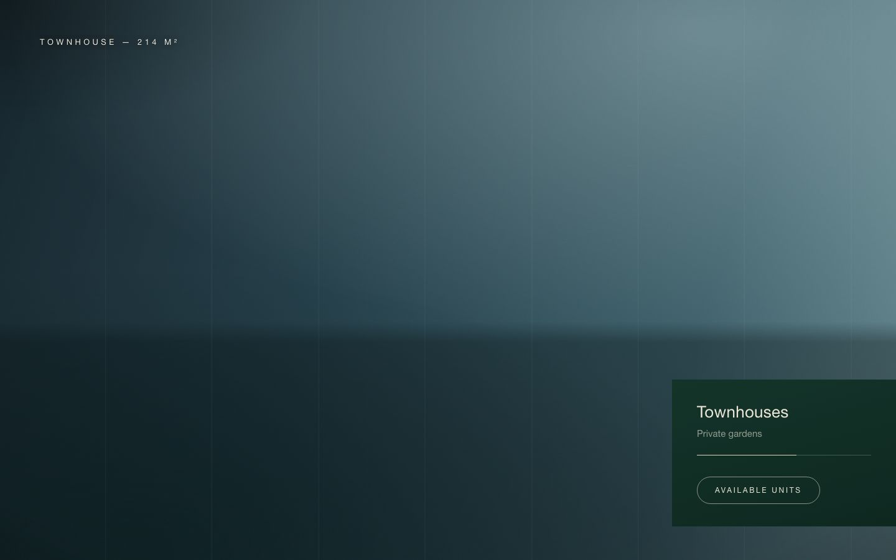
✅ Збіг: текст контейнера кросфейднувся Flats→Townhouses; сам контейнер не зникав; живий зум сцени під hold.
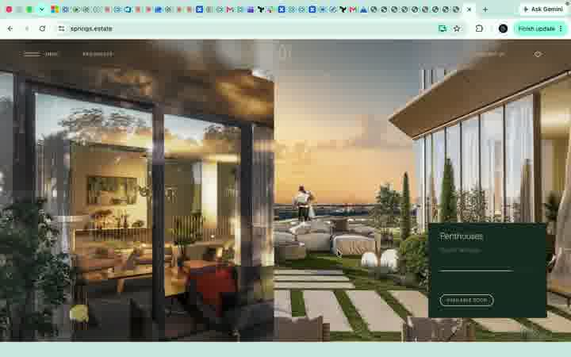
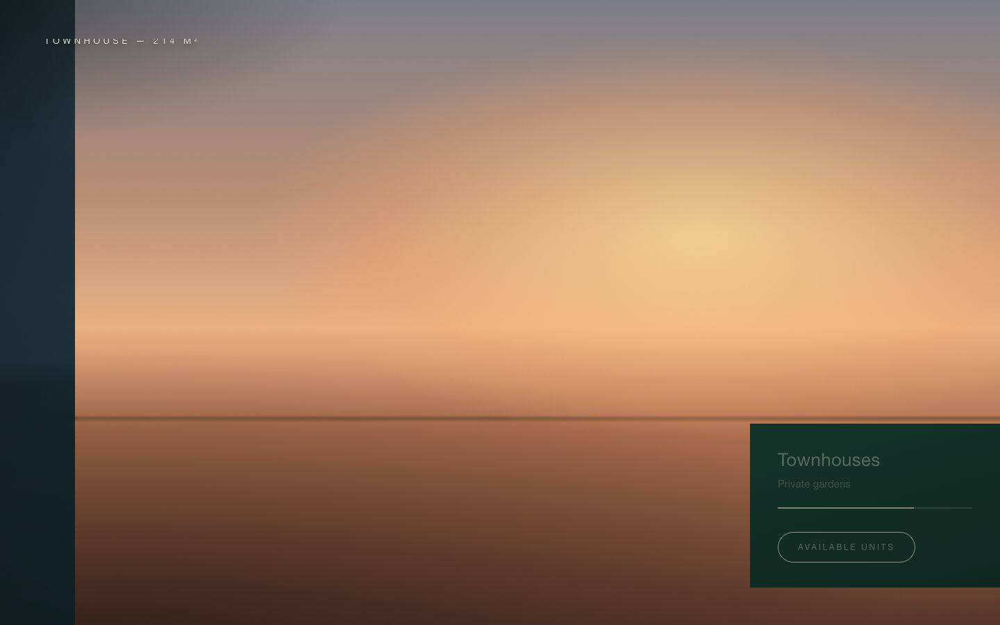
✅ Збіг: третій свап тим самим правилом; текст контейнера → Penthouses.
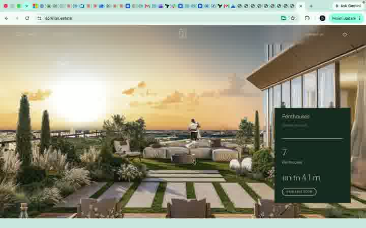
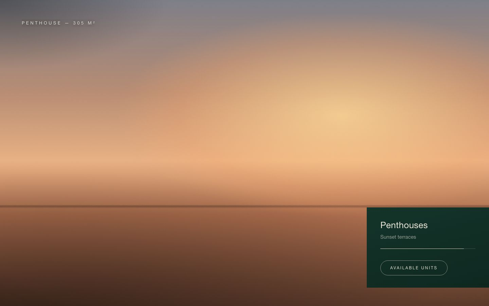
✅ Збіг: довгий фінальний hold; вихід (Interiors накриває знизу вгору, live 34.5s+) правильно НЕ включений в атом — це wipe-up.
✅ ПОРЯДОК БІТІВ ЗБІГАЄТЬСЯ (покадрова звірка): r1 → hold+hover → r2 (справа→наліво) → hold → r3 → hold; контейнер постійний, прогрес живий увесь band, текст кросфейдиться. Всі M1–M6 SPEC v3 підтверджені числовими гейтами. Що НЕ міряно: per-element/піксельна парність проти live (фасад dummy за задумом атома — element-gate тут не застосовний); темп hold-ів відрізняється (таблиця нижче).
| Біт | LIVE (частка band 19–34.5s) | BUILD (p-вікно) | Δ |
|---|---|---|---|
| title-hold | ≈0% («одразу» після wipe, наратив) | 0–10% | build довший |
| hold 1 | ~24% | 16% | live довший |
| cover 2 | ~13% (22.7–24.7s) | 12% | збіг |
| hold 2 | ~24% | 14% | live довший |
| cover 3 | ~13% (28.4–30.4s) | 12% | збіг |
| hold 3 | ~26% | 24% | збіг |
⚠ Калібрування v2 (не блокер, Єгор прийняв build у CD): (1) темп — live тримає hold-и 1–2 довше, title-hold коротший («одразу справа наліво», наратив); (2) top-left label «FLAT — 158 M²» — у live його НЕМА (тип живе в контейнері) — прийняте CD-доповнення, зафіксовано в SPEC; (3) у live під час cover 3 зверху миготить лічильник «01» — не відтворюємо, дрібниця.